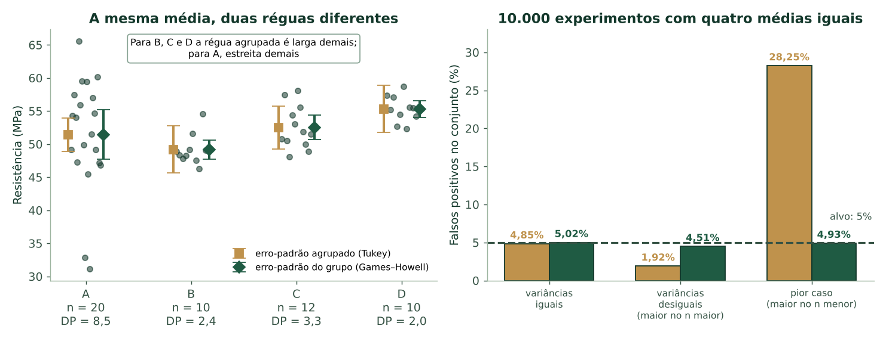
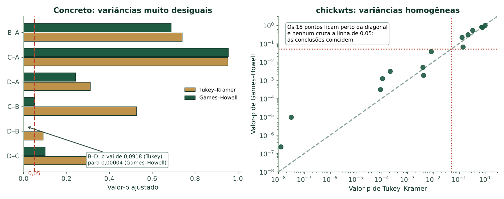

Games–Howell
Compara todas as médias duas a duas usando a variância de cada par, apropriado quando as variâncias dos grupos são desiguais.
Comece por aqui
O procedimento de Tukey compara todas as médias usando uma única estimativa de ruído, o quadrado médio do resíduo. Quando os grupos têm variâncias muito diferentes, essa régua única serve mal a todos: é larga demais para os grupos homogêneos e estreita demais para os dispersos. Games–Howell troca a régua comum pela régua própria de cada par.
Nos dados de concreto, o par B–D tem p = 0,0918 por Tukey e p = 0,00004 por Games–Howell. A diferença de 6,15 MPa é a mesma; o que muda é o erro-padrão, que cai de 2,569 para 0,981 — porque B e D são justamente as duas centrais mais homogêneas, e a régua agrupada estava inflada pela central A.
O que é o procedimento
A estrutura é a de Tukey: a estatística é uma diferença de médias dividida por um erro-padrão, e o valor crítico vem da distribuição da amplitude estudentizada com \(k\) médias. As duas trocas são no denominador. O erro-padrão de cada par usa as variâncias daquele par, como no teste t de Welch; e os graus de liberdade, em vez de serem os \(N-k\) do resíduo, são estimados par a par pela fórmula de Welch–Satterthwaite.

É o mesmo fenômeno descrito na ficha da ANOVA de Welch, e vale repetir porque só metade dele costuma ser lembrada. Quando a maior variância cai no menor grupo, o quadrado médio do resíduo subestima o ruído daquele grupo e o teste produz falsos positivos em excesso. Quando ela cai no maior grupo, o quadrado médio é inflado por ele e as comparações entre os grupos homogêneos ficam cegas. O segundo caso é o do exemplo desta ficha, e é o mais traiçoeiro: nada no resultado indica que algo foi perdido.
Pressupostos e como verificá-los
| Pressuposto | Por que importa | Como verificar |
|---|---|---|
| Observações independentes | Indispensável. | Delineamento. |
| Normalidade dentro de cada grupo | Sustenta a aproximação. | by(y, g, shapiro.test); Q-Q por grupo. Não use os resíduos agrupados. |
| Variâncias homogêneas | Não é exigida: é o que se dispensa. | Verifique mesmo assim, para decidir entre este método e Tukey. |
| Pelo menos cerca de 6 observações por grupo | Com n muito pequeno, a variância de cada grupo é instável e os gl estimados ficam ruins. | Conte as observações; alguns autores recomendam n ≥ 10. |
| Ausência de valores extremos dominantes | As variâncias amostrais ficam instáveis. | Boxplots; considere médias aparadas (ver Yuen). |
Games–Howell é o acompanhamento natural da ANOVA de Welch, não da ANOVA clássica. Usar a ANOVA clássica (que supõe variâncias iguais) e depois Games–Howell (que não supõe) é uma incoerência comum. Neste exemplo, aliás, a ANOVA clássica nem rejeita (p = 0,123), enquanto a de Welch rejeita com folga (p = 2,9 × 10⁻⁵).
Hipóteses e estatística de teste
Em que:
- \(k\)
- número de grupos — entra no valor crítico, mesmo nas comparações par a par
- \(s_i^2,\ n_i\)
- variância e tamanho do grupo i
- \(\nu_{ij}\)
- graus de liberdade estimados para aquele par
- \(q_{\alpha;k,\nu}\)
- quantil da amplitude estudentizada
Note que \(k\) permanece no valor crítico: é assim que o procedimento continua protegendo o conjunto das comparações, mesmo calculando cada erro-padrão separadamente.
Exemplo numérico, passo a passo
| Central | n | Média (MPa) | Desvio-padrão | Variância | s²/n |
|---|---|---|---|---|---|
| A | 20 | 51,435 | 8,523 | 72,644 | 3,632 |
| B | 10 | 49,170 | 2,350 | 5,525 | 0,553 |
| C | 12 | 52,525 | 3,256 | 10,604 | 0,884 |
| D | 10 | 55,320 | 2,026 | 4,106 | 0,411 |
A diferença é \(55{,}320-49{,}170=6{,}150\) MPa.
Com \(q_{0{,}05;\,4,\,17{,}62}=3{,}999\), o intervalo é \([+3{,}371;\ +8{,}929]\) MPa e \(p_{\text{aj}}=0{,}00004\).
Por Tukey, o erro-padrão do mesmo par seria \(\sqrt{\tfrac{32{,}991}{2}\left(\tfrac1{10}+\tfrac1{10}\right)}=1{,}816\) na escala de \(q\) — 2,6 vezes maior —, com 48 graus de liberdade, resultando em \(q=3{,}386\) e \(p_{\text{aj}}=0{,}0918\).
Propriedades
- Com variâncias iguais, aproxima-se de Tukey e perde pouco poder — os graus de liberdade de cada par são menores que os do resíduo agrupado.
- Com variâncias desiguais, mantém a taxa de erro do conjunto perto do nominal em uma faixa ampla de configurações.
- Com k = 2, equivale ao teste t de Welch.
- Os graus de liberdade \(\nu_{ij}\) são fracionários e variam de par para par.
- O controle da taxa de erro é aproximado, não exato; com grupos pequenos pode ficar ligeiramente acima de α.
- Fornece intervalos de confiança, não apenas valores-p.
Como interpretar os resultados
| Elemento | O que informa | Cuidado |
|---|---|---|
| Diferença | Estimativa pontual. | A mesma do Tukey. |
| Erro-padrão | Calculado com as variâncias do par. | É aqui que os métodos divergem. |
| gl | Estimados par a par. | Fracionários; informe-os. |
| p ajustado | Já protege o conjunto. | Vem de ptukey com os gl daquele par. |
| IC | Intervalo de 95% para o par. | A largura varia de par para par. |
| Comparação com Tukey | Revela o efeito da heterogeneidade. | Vale apresentar os dois quando a diferença é grande. |
Reporte as médias, os desvios-padrão e os tamanhos de cada grupo; as diferenças com intervalos; e os graus de liberdade de cada comparação. Diga explicitamente que o método não supõe variâncias iguais, e justifique a escolha com o teste de homogeneidade.
Como executar no R e em Python
Onde executar o código em Python
Não é preciso instalar nada: o Google Colab é um computador na nuvem, gratuito, que executa Python pelo navegador e já traz as bibliotecas usadas aqui (numpy, scipy e matplotlib).
Não há função no R base. rstatix::games_howell_test() é a rota mais simples e devolve diferenças, intervalos e valores-p ajustados em um quadro pronto; PMCMRplus::gamesHowellTest() é a alternativa. Uma aproximação razoável sem pacotes extras é pairwise.t.test() com pool.sd = FALSE e ajuste de Holm — ela usa as variâncias de cada par, mas controla a multiplicidade por Holm em vez da amplitude estudentizada. qtukey() e ptukey(), do pacote stats, aceitam graus de liberdade fracionários, o que permite implementar o procedimento diretamente.
rstatix::games_howell_test(dados, resistencia ~ central)
# teste global compatível:
oneway.test(resistencia ~ central, data = dados, var.equal = FALSE)
Exemplo de aplicação
Contexto dos dados
Os dados do exemplo são fictícios e foram criados pelo autor. A primeira parte usa os corpos de prova de concreto de quatro centrais dosadoras — o mesmo conjunto da ficha da ANOVA de Welch —, em que a central A tem variância 17,7 vezes maior que a da D. A segunda parte aplica o mesmo procedimento a chickwts, onde as variâncias são homogêneas, para mostrar o que se perde usando Games–Howell quando ele não é necessário.
Código em R
# Games-Howell: exemplo completo ----
# Pacotes: rstatix ou PMCMRplus. Opcional: userfriendlyscience (descontinuado)
# install.packages(c("rstatix", "PMCMRplus", "car"))
# 1. Dados fictícios: resistência à compressão (MPa) de corpos de prova de concreto
# de quatro centrais dosadoras. É o conjunto da ficha da ANOVA de Welch.
resistencia <- c(57.0,54.0,51.5,31.1,55.9,32.9,60.2,57.5,59.5,59.4,
54.7,47.2,49.2,65.6,46.8,49.9,45.5,47.3,49.2,54.3,
48.4,48.3,47.8,49.2,46.3,49.1,51.6,47.5,48.9,54.6,
50.5,48.9,51.9,57.5,58.1,50.0,54.4,53.0,51.5,48.1,55.6,50.8,
55.6,55.2,58.7,57.4,52.7,54.5,57.1,52.3,54.2,55.5)
central <- factor(rep(c("A", "B", "C", "D"), times = c(20, 10, 12, 10)))
dados <- data.frame(central, resistencia)
aggregate(resistencia ~ central, data = dados,
FUN = function(x) c(n = length(x), media = mean(x), dp = sd(x), var = var(x)))
# 2. O pressuposto que decide entre Tukey e Games-Howell
library(car)
leveneTest(resistencia ~ central, data = dados, center = median)
v <- tapply(dados$resistencia, dados$central, var); max(v) / min(v)
boxplot(resistencia ~ central, data = dados, col = "gray85")
# 3. O teste global compatível: ANOVA de Welch, não a clássica
oneway.test(resistencia ~ central, data = dados, var.equal = FALSE)
oneway.test(resistencia ~ central, data = dados, var.equal = TRUE) # para comparar
# 4. Games-Howell
library(rstatix)
games_howell_test(dados, resistencia ~ central)
# alternativas:
# PMCMRplus::gamesHowellTest(resistencia ~ central, data = dados)
# pairwise.t.test(dados$resistencia, dados$central, pool.sd = FALSE, p.adjust.method = "holm")
# 5. Para comparar: Tukey, que usa a variância agrupada
TukeyHSD(aov(resistencia ~ central, data = dados))
# 6. O cálculo passo a passo de um par, para entender a fórmula
m <- tapply(dados$resistencia, dados$central, mean)
s2 <- tapply(dados$resistencia, dados$central, var)
n <- table(dados$central)
i <- "B"; j <- "D"
dif <- m[j] - m[i]
ep <- sqrt((s2[i]/n[i] + s2[j]/n[j]) / 2) # erro-padrão na escala de q
gl <- (s2[i]/n[i] + s2[j]/n[j])^2 /
((s2[i]/n[i])^2/(n[i]-1) + (s2[j]/n[j])^2/(n[j]-1)) # Welch-Satterthwaite
q <- abs(dif) / ep
c(diferenca = dif, ep = ep, gl = gl, q = q,
p = ptukey(q, nmeans = 4, df = gl, lower.tail = FALSE),
inferior = dif - qtukey(0.95, 4, gl) * ep,
superior = dif + qtukey(0.95, 4, gl) * ep)
# 7. Gráfico: médias com o intervalo de cada grupo, não com o agrupado
medias <- m; eps <- sqrt(s2 / n)
plot(1:4, medias, ylim = c(44, 60), pch = 18, cex = 2, xaxt = "n",
xlab = "Central dosadora", ylab = "Resistência (MPa)")
axis(1, at = 1:4, labels = levels(dados$central))
arrows(1:4, medias - 1.96 * eps, 1:4, medias + 1.96 * eps, angle = 90, code = 3, length = 0.08)
A mesma análise em Python, com os resultados
Cole o código em um notebook do Google Colab ↗ e execute com Shift+Enter. Os valores abaixo são a saída desse código.
# Bibliotecas: numpy, scipy e matplotlib (já instaladas no Google Colab)
import numpy as np
from scipy import stats
import itertools
alfa = 0.05
def games_howell(gs, nomes):
"""Comparações múltiplas com a variância de cada grupo e gl de Welch-Satterthwaite."""
k = len(gs)
n = np.array([len(g) for g in gs], float)
m = np.array([g.mean() for g in gs])
v = np.array([g.var(ddof=1) for g in gs])
linhas = []
for a, b in itertools.combinations(range(k), 2):
dif = m[b] - m[a]
ep = np.sqrt((v[a]/n[a] + v[b]/n[b]) / 2) # erro-padrão na escala de q
glw = (v[a]/n[a] + v[b]/n[b])**2 / ((v[a]/n[a])**2/(n[a]-1) + (v[b]/n[b])**2/(n[b]-1))
q = abs(dif) / ep
pa = stats.studentized_range.sf(q, k, glw)
marg = stats.studentized_range.ppf(1-alfa, k, glw) * ep
linhas.append((f"{nomes[b]} - {nomes[a]}", dif, ep*np.sqrt(2), glw, q, pa, dif-marg, dif+marg))
return linhas
def tukey(gs, nomes):
"""Tukey-Kramer: variância agrupada e gl do resíduo."""
k = len(gs)
n = np.array([len(g) for g in gs], float)
m = np.array([g.mean() for g in gs])
v = np.array([g.var(ddof=1) for g in gs])
N = int(n.sum()); QM = np.sum((n-1)*v)/(N-k); gl = N-k
linhas = []
for a, b in itertools.combinations(range(k), 2):
dif = m[b] - m[a]
ep = np.sqrt(QM/2 * (1/n[a] + 1/n[b]))
q = abs(dif)/ep
marg = stats.studentized_range.ppf(1-alfa, k, gl)*ep
linhas.append((f"{nomes[b]} - {nomes[a]}", dif, ep*np.sqrt(2), float(gl),
q, stats.studentized_range.sf(q, k, gl), dif-marg, dif+marg))
return linhas
# ===================================================================
# PARTE 1 - onde Games-Howell faz diferença: variâncias muito desiguais
# Dados fictícios: resistência à compressão (MPa) de corpos de prova de concreto
# de quatro centrais dosadoras. É o conjunto da ficha da ANOVA de Welch.
A = np.array([57.0,54.0,51.5,31.1,55.9,32.9,60.2,57.5,59.5,59.4,54.7,47.2,49.2,65.6,46.8,49.9,45.5,47.3,49.2,54.3])
B = np.array([48.4,48.3,47.8,49.2,46.3,49.1,51.6,47.5,48.9,54.6])
C = np.array([50.5,48.9,51.9,57.5,58.1,50.0,54.4,53.0,51.5,48.1,55.6,50.8])
D = np.array([55.6,55.2,58.7,57.4,52.7,54.5,57.1,52.3,54.2,55.5])
gs = [A, B, C, D]; nm = ["A", "B", "C", "D"]
n = np.array([len(g) for g in gs], float)
v = np.array([g.var(ddof=1) for g in gs])
print("central n média DP variância")
for i, s in enumerate(nm):
print(f" {s} {int(n[i]):2d} {gs[i].mean():6.3f} {np.sqrt(v[i]):5.3f} {v[i]:8.3f}")
print(f"Razão entre a maior e a menor variância = {v.max()/v.min():.2f}")
print(f"Brown-Forsythe: W = {stats.levene(*gs, center='median')[0]:.4f}, "
f"p-valor = {stats.levene(*gs, center='median')[1]:.5f}")
N = int(n.sum()); k = 4
QM = np.sum((n-1)*v)/(N-k)
print(f"\nQM do resíduo agrupado = {QM:.3f} (DP = {np.sqrt(QM):.3f} MPa)")
print("Esse número é a única régua que o Tukey usa. Compare com os DP de cada central:")
print(" ele é mais que o dobro do DP de B, C e D, e bem menor que o de A.")
gh = games_howell(gs, nm); tk = tukey(gs, nm)
print("\nTukey-Kramer (variância agrupada, 48 gl para todos os pares)")
print(f"{'comparação':<12}{'dif.':>9}{'EP':>8}{'gl':>8}{'q':>8}{'p ajust.':>11}{'IC 95%':>24}")
for nome, dif, ep, g_, q, pa, lo, hi in tk:
print(f"{nome:<12}{dif:9.3f}{ep:8.3f}{g_:8.2f}{q:8.3f}{pa:11.5f}{'*' if pa<alfa else ' '}"
f" [{lo:8.3f}; {hi:8.3f}]")
print("\nGames-Howell (variância de cada par, gl de Welch-Satterthwaite)")
print(f"{'comparação':<12}{'dif.':>9}{'EP':>8}{'gl':>8}{'q':>8}{'p ajust.':>11}{'IC 95%':>24}")
for nome, dif, ep, g_, q, pa, lo, hi in gh:
print(f"{nome:<12}{dif:9.3f}{ep:8.3f}{g_:8.2f}{q:8.3f}{pa:11.5f}{'*' if pa<alfa else ' '}"
f" [{lo:8.3f}; {hi:8.3f}]")
i_bd = [l[0] for l in tk].index("D - B")
print(f"\nO par B-D: Tukey usa EP = {tk[i_bd][2]:.3f} com {tk[i_bd][3]:.0f} gl; "
f"Games-Howell usa EP = {gh[i_bd][2]:.3f} com {gh[i_bd][3]:.2f} gl.")
print(f"O erro-padrão cai {100*(1 - gh[i_bd][2]/tk[i_bd][2]):.1f}%, porque B e D são justamente as")
print("duas centrais mais homogêneas: a régua agrupada, inflada pela central A, era")
print(f"larga demais para elas. A diferença de {tk[i_bd][1]:.2f} MPa, que o Tukey não detecta")
print(f"(p = {tk[i_bd][5]:.4f}), passa a p = {gh[i_bd][5]:.5f}.")
# ===================================================================
# PARTE 2 - onde Games-Howell quase não muda nada: variâncias homogêneas
print("\n" + "=" * 70)
print("chickwts: seis rações, variâncias homogêneas (o conjunto da ficha de Tukey)")
dados = {
"horsebean": [179,160,136,227,217,168,108,124,143,140],
"linseed": [309,229,181,141,260,203,148,169,213,257,244,271],
"soybean": [243,230,248,327,329,250,193,271,316,267,199,171,158,248],
"sunflower": [423,340,392,339,341,226,320,295,334,322,297,318],
"meatmeal": [325,257,303,315,380,153,263,242,206,344,258],
"casein": [368,390,379,260,404,318,352,359,216,222,283,332]}
nomes2 = list(dados); gs2 = [np.array(v_, float) for v_ in dados.values()]
v2 = np.array([g.var(ddof=1) for g in gs2])
print(f"Razão entre variâncias = {v2.max()/v2.min():.2f} | "
f"Brown-Forsythe p = {stats.levene(*gs2, center='median')[1]:.4f}")
gh2 = games_howell(gs2, nomes2); tk2 = tukey(gs2, nomes2)
print(f"\n{'comparação':<26}{'dif.':>9}{'Tukey':>11}{'Games-Howell':>15}{'gl de G-H':>12}")
for (nome, dif, _, _, _, pt, _, _), (_, _, _, glw, _, pg, _, _) in zip(tk2, gh2):
print(f"{nome:<26}{dif:9.2f}{pt:11.5f}{'*' if pt<alfa else ' '}"
f"{pg:14.5f}{'*' if pg<alfa else ' '}{glw:12.2f}")
ct, cg = sum(1 for l in tk2 if l[5] < alfa), sum(1 for l in gh2 if l[5] < alfa)
print(f"\nSignificativas: Tukey {ct} | Games-Howell {cg}. As conclusões coincidem.")
print("Com variâncias homogêneas, Games-Howell custa poder (os gl de cada par são")
print("menores que os 65 do resíduo agrupado), mas o prejuízo é pequeno.")
# ===================================================================
# PARTE 3 - taxa de erro do conjunto nos dois cenários
print("\n" + "=" * 70)
print("Simulação: 10.000 experimentos com QUATRO grupos de médias IGUAIS")
rng = np.random.default_rng(2026)
M = 10000
# O valor crítico q(5%, k = 4, gl) é liso em gl: tabela-se uma vez e interpola-se,
# em vez de recalcular a integral em cada uma das 240.000 comparações da simulação.
gl_tab = np.unique(np.round(np.geomspace(3, 400, 90), 3))
q_tab = np.array([stats.studentized_range.ppf(1-alfa, 4, g_) for g_ in gl_tab])
q_interp = lambda g_: np.interp(np.clip(g_, gl_tab[0], gl_tab[-1]), gl_tab, q_tab)
erro = max(abs(q_interp(g_) - stats.studentized_range.ppf(1-alfa, 4, g_))
for g_ in (4.7, 9.3, 17.6, 33.1, 88.4))
print(f"(erro máximo da interpolação do valor crítico: {erro:.6f})")
for titulo, ns_, sds_ in [("variâncias iguais (n = 10, 12, 10, 12; DP = 3 em todos)",
[10, 12, 10, 12], [3., 3., 3., 3.]),
("variâncias desiguais (n = 20, 10, 12, 10; DP = 9, 2, 2.5, 2)",
[20, 10, 12, 10], [9., 2., 2.5, 2.]),
("pior caso: a maior variância no menor grupo (n = 20, 12, 10, 6)",
[20, 12, 10, 6], [2., 2.5, 2., 9.])]:
kk = 4
N_ = sum(ns_); glr = N_ - kk
q_t = stats.studentized_range.ppf(1-alfa, kk, glr)
nn_ = np.array(ns_, float)
G = [rng.normal(50, s, (M, nnn)) for nnn, s in zip(ns_, sds_)]
mm = np.column_stack([g.mean(axis=1) for g in G]) # M x 4
vv = np.column_stack([g.var(axis=1, ddof=1) for g in G])
QMr = (vv * (nn_ - 1)).sum(axis=1) / glr
achou_t = np.zeros(M, bool); achou_g = np.zeros(M, bool)
for a, b in itertools.combinations(range(kk), 2):
d = np.abs(mm[:, b] - mm[:, a])
achou_t |= d / np.sqrt(QMr/2 * (1/nn_[a] + 1/nn_[b])) > q_t
sa, sb = vv[:, a]/nn_[a], vv[:, b]/nn_[b]
epg = np.sqrt((sa + sb)/2)
glw = (sa + sb)**2 / (sa**2/(nn_[a]-1) + sb**2/(nn_[b]-1))
achou_g |= d/epg > q_interp(glw)
print(f"\n {titulo}")
print(f" Tukey-Kramer: {100*achou_t.mean():5.2f}% Games-Howell: "
f"{100*achou_g.mean():5.2f}% (alvo: 5%)")
Resultados da execução
central n média DP variância
A 20 51.435 8.523 72.644
B 10 49.170 2.350 5.525
C 12 52.525 3.256 10.604
D 10 55.320 2.026 4.106
Razão entre a maior e a menor variância = 17.69
Brown-Forsythe: W = 5.8593, p-valor = 0.00171
QM do resíduo agrupado = 32.991 (DP = 5.744 MPa)
Esse número é a única régua que o Tukey usa. Compare com os DP de cada central:
ele é mais que o dobro do DP de B, C e D, e bem menor que o de A.
Tukey-Kramer (variância agrupada, 48 gl para todos os pares)
comparação dif. EP gl q p ajust. IC 95%
B - A -2.265 2.225 48.00 1.440 0.73966 [ -8.185; 3.655]
C - A 1.090 2.097 48.00 0.735 0.95395 [ -4.492; 6.672]
D - A 3.885 2.225 48.00 2.470 0.31161 [ -2.035; 9.805]
C - B 3.355 2.459 48.00 1.929 0.52756 [ -3.190; 9.900]
D - B 6.150 2.569 48.00 3.386 0.09185 [ -0.686; 12.986]
D - C 2.795 2.459 48.00 1.607 0.66905 [ -3.750; 9.340]
Games-Howell (variância de cada par, gl de Welch-Satterthwaite)
comparação dif. EP gl q p ajust. IC 95%
B - A -2.265 2.046 24.04 1.566 0.68864 [ -7.907; 3.377]
C - A 1.090 2.125 26.65 0.725 0.95528 [ -4.730; 6.910]
D - A 3.885 2.011 22.92 2.733 0.24285 [ -1.681; 9.451]
C - B 3.355 1.198 19.66 3.959 0.05036 [ -0.004; 6.714]
D - B 6.150 0.981 17.62 8.863 0.00004* [ 3.371; 8.929]
D - C 2.795 1.138 18.67 3.474 0.10048 [ -0.409; 5.999]
O par B-D: Tukey usa EP = 2.569 com 48 gl; Games-Howell usa EP = 0.981 com 17.62 gl.
O erro-padrão cai 61.8%, porque B e D são justamente as
duas centrais mais homogêneas: a régua agrupada, inflada pela central A, era
larga demais para elas. A diferença de 6.15 MPa, que o Tukey não detecta
(p = 0.0918), passa a p = 0.00004.
======================================================================
chickwts: seis rações, variâncias homogêneas (o conjunto da ficha de Tukey)
Razão entre variâncias = 2.82 | Brown-Forsythe p = 0.5896
comparação dif. Tukey Games-Howell gl de G-H
linseed - horsebean 58.55 0.14133 0.06494 19.77
soybean - horsebean 86.23 0.00422* 0.00190* 22.00
sunflower - horsebean 168.72 0.00000* 0.00000* 19.96
meatmeal - horsebean 116.71 0.00011* 0.00124* 16.52
casein - horsebean 163.38 0.00000* 0.00001* 18.36
soybean - linseed 27.68 0.79329 0.76890 23.63
sunflower - linseed 110.17 0.00009* 0.00030* 21.90
meatmeal - linseed 58.16 0.12770 0.22093 19.24
casein - linseed 104.83 0.00021* 0.00310* 21.10
sunflower - soybean 82.49 0.00388* 0.00509* 23.92
meatmeal - soybean 30.48 0.73914 0.80600 19.45
casein - soybean 77.15 0.00837* 0.03604* 21.63
meatmeal - sunflower -52.01 0.22070 0.30300 18.54
casein - sunflower -5.33 0.99989 0.99990 20.50
casein - meatmeal 46.67 0.33246 0.52927 20.80
Significativas: Tukey 8 | Games-Howell 8. As conclusões coincidem.
Com variâncias homogêneas, Games-Howell custa poder (os gl de cada par são
menores que os 65 do resíduo agrupado), mas o prejuízo é pequeno.
======================================================================
Simulação: 10.000 experimentos com QUATRO grupos de médias IGUAIS
(erro máximo da interpolação do valor crítico: 0.001156)
variâncias iguais (n = 10, 12, 10, 12; DP = 3 em todos)
Tukey-Kramer: 4.85% Games-Howell: 5.02% (alvo: 5%)
variâncias desiguais (n = 20, 10, 12, 10; DP = 9, 2, 2.5, 2)
Tukey-Kramer: 1.92% Games-Howell: 4.51% (alvo: 5%)
pior caso: a maior variância no menor grupo (n = 20, 12, 10, 6)
Tukey-Kramer: 28.25% Games-Howell: 4.93% (alvo: 5%)
chickwts: os quinze pontos ficam perto da diagonal e nenhum cruza a linha de 0,05 em um sentido e não no outro — com variâncias homogêneas, os dois procedimentos concordam. Fonte: o autor.Parte 1: concreto, variâncias muito desiguais
| Elemento | Valor | Leitura |
|---|---|---|
| Razão entre variâncias | 17,69 | Muito acima do tolerável. |
| Brown–Forsythe | W = 5,859; p = 0,0017 | Heterogeneidade confirmada. |
| QM do resíduo agrupado | 32,991 (DP = 5,744 MPa) | Mais que o dobro do DP de B, C e D. |
| ANOVA clássica | F(3; 48) = 2,021; p = 0,1235 | Não rejeita. |
| ANOVA de Welch | F(3; 25,891) = 12,583; p = 2,9 × 10⁻⁵ | Rejeita com folga. |
| Par | Diferença (MPa) | Tukey: EP / gl / p | Games–Howell: EP / gl / p |
|---|---|---|---|
| B − A | −2,265 | 2,225 / 48 / 0,7397 | 2,046 / 24,04 / 0,6886 |
| C − A | +1,090 | 2,097 / 48 / 0,9540 | 2,125 / 26,65 / 0,9553 |
| D − A | +3,885 | 2,225 / 48 / 0,3116 | 2,011 / 22,92 / 0,2429 |
| C − B | +3,355 | 2,459 / 48 / 0,5276 | 1,198 / 19,66 / 0,0504 |
| D − B | +6,150 | 2,569 / 48 / 0,0918 | 0,981 / 17,62 / 0,00004 * |
| D − C | +2,795 | 2,459 / 48 / 0,6690 | 1,138 / 18,67 / 0,1005 |
Leitura: a central D entrega concreto com resistência média 6,15 MPa maior que a da central B, com intervalo de 3,37 a 8,93 MPa. Tukey não detecta essa diferença, e o motivo não tem nada a ver com os dois grupos comparados: é a central A, com desvio-padrão de 8,52 MPa e vinte dos 52 corpos de prova, que infla o quadrado médio do resíduo e impõe a B e a D uma régua 2,6 vezes maior do que a que lhes cabe.
O par C–B fica no limite (p = 0,0504 por Games–Howell, contra 0,5276 por Tukey), e é um bom lembrete de que a mudança de método não é um atalho para obter significância: ela muda o resultado porque muda a pergunta sobre qual é o ruído relevante.
Parte 2: chickwts, variâncias homogêneas
| Elemento | Valor |
|---|---|
| Razão entre variâncias | 2,82 |
| Brown–Forsythe | p = 0,5896 |
| Significativas por Tukey | 8 de 15 |
| Significativas por Games–Howell | 8 de 15 |
| Graus de liberdade por par (Games–Howell) | entre 16,5 e 23,6 |
| Graus de liberdade (Tukey) | 65 para todos os pares |
Leitura: as conclusões são idênticas. O custo de usar Games–Howell desnecessariamente aparece nos graus de liberdade: cada par trabalha com 16 a 24 graus de liberdade, contra os 65 do resíduo agrupado. Isso alarga um pouco os intervalos e, em comparações de fronteira, pode custar significância — a comparação linseed − horsebean, por exemplo, tem p = 0,1413 por Tukey e p = 0,0649 por Games–Howell, nenhum dos dois significativo, mas em direções que poderiam ter importado.
A regra prática é simples: quando há evidência de heterogeneidade, Games–Howell; quando não há, Tukey, que usa toda a informação disponível sobre o ruído. Alguns autores recomendam Games–Howell como padrão, pelo mesmo argumento que leva a recomendar Welch por padrão — o prejuízo de usá-lo sem necessidade é pequeno, e o de não usá-lo quando necessário é grande.
Erros comuns
| Erro | Como evitar |
|---|---|
| Usar Games–Howell depois de uma ANOVA clássica | O teste global compatível é a ANOVA de Welch. |
| Aplicar com grupos muito pequenos | Com n < 6 as variâncias são instáveis; o controle da taxa de erro se degrada. |
| Testar normalidade nos resíduos agrupados | Com variâncias desiguais eles formam uma mistura; teste por grupo. |
| Reportar os gl arredondados para inteiro | São fracionários e variam de par para par. |
| Desenhar barras de erro com o erro-padrão agrupado | Use o de cada grupo. |
| Trocar de método depois de ver que Tukey não deu significativo | A decisão vem do diagnóstico de homogeneidade, não do resultado. |
| Achar que Games–Howell resolve assimetria | Ele trata variâncias desiguais, não a forma da distribuição. |
| Supor que Tukey só erra para mais | Quando a maior variância está no maior grupo, ele perde poder. |
Alternativas e fluxo de trabalho
| Procedimento | Quando preferir |
|---|---|
| Tukey–Kramer | Variâncias homogêneas; usa toda a informação sobre o ruído. |
| Dunnett T3 | Variâncias desiguais com grupos pequenos (n < 50); mais conservador. |
| Dunnett C | Variâncias desiguais; alternativa baseada na amplitude estudentizada. |
| Tamhane T2 | Variâncias desiguais, com ajuste de Šidák; conservador. |
pairwise.t.test com pool.sd = FALSE e Holm | Rota simples, sem pacotes extras. |
Médias aparadas (WRS2::lincon) | Caudas pesadas, além de variâncias desiguais (ver Yuen). |
| Dunn (postos) | Depois de um Kruskal–Wallis. |
| Bootstrap com ajuste | Amostras pequenas e distribuições irregulares. |
- Descreva cada grupo: n, média, desvio-padrão e variância.
- Calcule a razão entre a maior e a menor variância e aplique Brown–Forsythe.
- Verifique a normalidade dentro de cada grupo.
- Se houver heterogeneidade, use a ANOVA de Welch como teste global.
- Aplique Games–Howell e reporte diferenças, intervalos, gl e valores-p ajustados.
- Apresente as médias com os intervalos construídos a partir da variância de cada grupo.
- Quando a diferença entre Tukey e Games–Howell for grande, mostre as duas e explique por quê.
Referências desta ficha
- GAMES, Paul A.; HOWELL, John F. Pairwise multiple comparison procedures with unequal n’s and/or variances: a Monte Carlo study. Journal of Educational Statistics, v. 1, n. 2, p. 113-125, 1976.
- WELCH, B. L. The generalization of Student’s problem when several different population variances are involved. Biometrika, v. 34, n. 1-2, p. 28-35, 1947.
- SATTERTHWAITE, Franklin E. An approximate distribution of estimates of variance components. Biometrics Bulletin, v. 2, n. 6, p. 110-114, 1946.
- GAMES, Paul A.; KESELMAN, H. J.; ROGAN, Joanne C. Simultaneous pairwise multiple comparison procedures for means when sample sizes are unequal. Psychological Bulletin, v. 90, n. 3, p. 594-598, 1981.
- DUNNETT, Charles W. Pairwise multiple comparisons in the unequal variance case. Journal of the American Statistical Association, v. 75, n. 372, p. 796-800, 1980.
- DELACRE, Marie et al. Taking parametric assumptions seriously: arguments for the use of Welch’s F-test instead of the classical F-test in one-way ANOVA. International Review of Social Psychology, v. 32, n. 1, art. 13, 2019.
- HOCHBERG, Yosef; TAMHANE, Ajit C. Multiple comparison procedures. New York: Wiley, 1987.
- BRETZ, Frank; HOTHORN, Torsten; WESTFALL, Peter. Multiple comparisons using R. Boca Raton: Chapman and Hall/CRC, 2010.
- ANÓNIMO. Biometrika table. Biometrika, v. 35, p. 214, 1948; ver McNEIL, Donald R. Interactive data analysis. New York: Wiley, 1977. (Fonte dos dados
chickwts.) - R CORE TEAM. R: a language and environment for statistical computing. Vienna: R Foundation for Statistical Computing, 2026. Disponível em: https://www.r-project.org/. (Funções
ptukey,qtukey,oneway.testepairwise.t.test, pacotestats.) - KASSAMBARA, Alboukadel. rstatix: pipe-friendly framework for basic statistical tests. R package. Disponível em: https://CRAN.R-project.org/package=rstatix. (Função
games_howell_test.) - POHLERT, Thorsten. PMCMRplus: calculate pairwise multiple comparisons of mean rank sums extended. R package. Disponível em: https://CRAN.R-project.org/package=PMCMRplus.
- POSIT TEAM. RStudio: integrated development environment for R. Boston: Posit Software, PBC. Disponível em: https://posit.co/download/rstudio-desktop/.
- VIRTANEN, Pauli et al. SciPy 1.0: fundamental algorithms for scientific computing in Python. Nature Methods, v. 17, p. 261-272, 2020. DOI: 10.1038/s41592-019-0686-2. (Funções do módulo
scipy.stats.) - HARRIS, Charles R. et al. Array programming with NumPy. Nature, v. 585, p. 357-362, 2020. DOI: 10.1038/s41586-020-2649-2.
- HUNTER, John D. Matplotlib: a 2D graphics environment. Computing in Science & Engineering, v. 9, n. 3, p. 90-95, 2007.
- GOOGLE. Google Colaboratory. Disponível em: https://colab.research.google.com/.
- As figuras desta ficha foram elaboradas pelo autor.

Prof. Dr. Cássius Henrique Xavier Oliveira
Professor · ICTIN/UFLA · Estatística, Confiabilidade e Ciência de Dados.
Conheça minha trajetória e projetos →